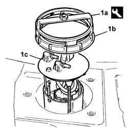

1040A14 FUEL TANK - R.R. for REPLACEMENT
- Path
- Procedures > 10 ENGINE > 1040 FUEL TANK AND PIPES > 1040A FUEL TANK AND COMPONENTS > 1040A14 FUEL TANK - R.R. for REPLACEMENT
- Kind
- repair procedure (removal / refitting; the operation number is the code)
- Applies to
- engines: 2.4 JTD 20V; all production periods
- Interactive page
- https://sloeber94.github.io/elrnDB-lThss/en/#/850310
Applies to: engines: 2.4 JTD 20V; all production periods
 Removing
Removing
 Refitting
RefittingSee in Op. 7040B10 LOAD CARRYING COMPARTMENT LINING - R.R.
See in Op. 7040B17 Luggage compartment/load platform side trim flap (one) - Replace
See in Op. 7040B13 Luggage compartment/load platform SIDE LINING - R.R.
See in Op. 4450B11 Rear WHEEL (one) - R.R.
See in Op. 7055B43 REAR WHEEL ARCH LINER (one), left or right - R.R.
See in Op. 4440K31 LEFT OR RIGHT REAR INTELLIGENT SUSPENSION SHOCK ABSORBER (ONE) - R.R.
See in Op. 1076B20 Rear exhaust SILENCER - R.R.
See in Op. 1076A40 Exhaust pipe HEAT SHIELDS - R.R.
See in Op. 4420D10 REAR SUSPENSION AXLE - R.R.
See in Op. 1040A10 FUEL TANK - R.R. and decant fuel
- Proceed with separating the fuel filler pipe from the tank, acting on the two bands.
1. Undo the ring nut (1b), using the tool (1a), then remove the fuel pump (1c), complete with level gauge.
 | Description | Code | Function |
|---|---|---|---|
1a | Tool for removing fuel pump retaining ring nut | 1.870.736.000 | Tool for removing fuel pump retaining ring nut |

Applies to: engines: 2.4 JTD 20V; all production periods
Refitting
Removing- Position the fuel pump in its housing in the tank.
- Fit the ring nut and tighten it torque using the tool.
| Description | Code | Function |
|---|---|---|---|
. | Tool for removing fuel pump retaining ring nut | 1.870.736.000 | Tool for removing fuel pump retaining ring nut |
- Proceed with refitting the fuel filler pipe using new bands.
See in Op. 1040A10 FUEL TANK - R.R. and decant fuel
See in Op. 4420D10 REAR SUSPENSION AXLE - R.R.
See in Op. 1076A40 Exhaust pipe HEAT SHIELDS - R.R.
See in Op. 1076B20 Rear exhaust SILENCER - R.R.
See in Op. 4440K31 LEFT OR RIGHT REAR INTELLIGENT SUSPENSION SHOCK ABSORBER (ONE) - R.R.
See in Op. 7055B43 REAR WHEEL ARCH LINER (one), left or right - R.R.
See in Op. 4450B11 Rear WHEEL (one) - R.R.
See in Op. 7040B13 Luggage compartment/load platform SIDE LINING - R.R.
See in Op. 7040B17 Luggage compartment/load platform side trim flap (one) - Replace
Topics linked from this page (10)
- 1040A10 FUEL TANK - R.R. and decant fuel
- 1076A40 Exhaust pipe HEAT SHIELDS - R.R.
- 1076B20 Rear exhaust SILENCER - R.R.
- 4420D10 REAR SUSPENSION AXLE - R.R.
- 4440K31 LEFT OR RIGHT REAR INTELLIGENT SUSPENSION SHOCK ABSORBER (ONE) - R.R.
- 4450B11 Rear WHEEL (one) - R.R.
- 7040B10 LOAD CARRYING COMPARTMENT LINING - R.R.
- 7040B13 Luggage compartment/load platform SIDE LINING - R.R.
- 7040B17 Luggage compartment/load platform side trim flap (one) - Replace
- 7055B43 REAR WHEEL ARCH LINER (one), left or right - R.R.